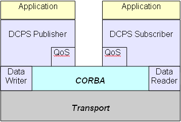

<div id="contenttext">
  <div class="bodytext" align="justify">
    <span class="headertext">The DDS specification defines two separate interfaces.</span>
    <ol>
      <li>A Data-Centric Publish-Subscribe (DCPS) interface which provides a global data space.
        <ul>
          <li>Type-specific data publishers send data that interested subscribers can receive.</li>
        </ul>
        This is considered a low level interface and very similar to past MOMA (Message Oriented Middleware Architecture) implementations that became prevalent in the 1990&rsquo;s.<br/><br/>
      </li>
      <li>A Data Local Reconstruction Layer (DLRL) which allows for distribution of an object model.
        <ul>
          <li>This is an optional layer built on top of DCPS.</li>
        </ul>
        DLRL is functionally very attractive as it provides a higher level interface and hides much of the pub/sub details behind a local framework. It shifts DDS back to providing more transparency as is usual with CORBA.
      </li>
    </ol>

    <p align="center"><strong>DCPS Usage</strong><br/></p>

    <p align="center"><strong>DLRL Usage</strong><br/></p>

    <p>In both cases it can be seen that clear performance benefits should be achievable when readers and writers utilize the transport directly. It can also be appreciated how a DLRL can provide a framework to further mask applications, (those that are remote from the data sources), from any underlying distribution complexity.</p>

    <p><strong><em>OpenDDS presently implements the DCPS level.</em></strong></p>
  </div>
</div>
